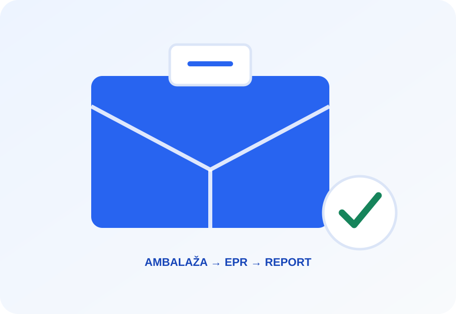

Prodajete u EU?
Provjerite EPR.
Brza početna procjena obveza vezanih uz ambalažu za hrvatske web shopove koji šalju fizičke proizvode kupcima u druge države EU.
Prvo saznajte što trebate provjeriti.
Ne dajemo proizvoljnu brojčanu ocjenu. Na temelju vaših odgovora izdvajamo konkretna područja koja treba dodatno provjeriti.
EPR Check
Početna procjena za vaš webshop
Odabrano: ništa
Odabrano: ništa
Odabrano: ništa
Od nejasnog pravila do jasnog sljedećeg koraka.
EPR Check je napravljen za male webshopove koji nemaju vremena proučavati zasebne sustave za svako EU tržište.
Odaberite tržišta
Recite gdje šaljete proizvode, koliko približno šaljete i kakvu ambalažu koristite.
Dobijte početni rezultat
Vidite koja tržišta traže detaljniju provjeru i koje teme treba obraditi.
Riješite sljedeći korak
Za €49 možete naručiti strukturirani EPR Report s pregledom i korisnim poveznicama.

Problem nije samo naknada. Problem je administracija.
Za mali webshop nekoliko prekograničnih tržišta može značiti više registara, sustava, evidencija, rokova i potencijalnih fiksnih troškova.
Ne želite samo znati da postoji problem?
Dobijte strukturirani pregled za odabrane države i praktičan popis stvari koje trebate provjeriti prije prekogranične prodaje.
Vi birate tko će odraditi EPR.
Za Njemačku ne šaljemo korisnika na neprovjerenu stranicu. Prikazujemo službeni ZSVR izvor i nekoliko relevantnih komercijalnih opcija.
ZSVR — pregled sustava
Službeni njemački registar i pregled system operatoraInterzero
EPR usluge za ambalažu i međunarodna tržištaLandbell
Packaging compliance i međunarodne EPR uslugeLizenzero / Interzero
Online rješenja za njemačku ambalažuPoveznice su informativne. EPR Check nije povezan s navedenim organizacijama i ne jamči cijene ni kvalitetu usluge.
EPR Check za najvažnija EU tržišta.
SEO vodiči vode izravno u besplatnu provjeru.
Želite detaljniju procjenu?
U MVP fazi izvještaj izrađujemo ručno kako bismo ga mogli prilagoditi stvarnim potrebama malog webshopa.
Najčešća pitanja o EPR-u.
Umjesto jednog dugog zida pitanja, odaberite temu koja vas zanima.
Što je EPR?
EPR je proširena odgovornost proizvođača. U određenim situacijama subjekt koji stavlja proizvode ili ambalažu na tržište ima obveze povezane s registracijom, financiranjem zbrinjavanja i izvještavanjem.
Što je PPWR?
PPWR je EU uredba o ambalaži i ambalažnom otpadu. Uspostavlja zajednički okvir, ali konkretna provedba i nacionalni EPR sustavi i dalje zahtijevaju provjeru po tržištu.
Što je EPR/PRO sustav?
PRO je organizacija ili sustav kroz koji se u praksi može provoditi proširena odgovornost proizvođača.
Postoji li jedna EPR registracija za cijelu EU?
Ne treba pretpostaviti da jedna registracija automatski pokriva sve države. Nacionalni registri, sustavi i procedure mogu se razlikovati.
Moram li imati EPR ako šaljem samo nekoliko paketa?
Mali broj pošiljaka sam po sebi nije dovoljan za zaključak da obveza ne postoji.
Moram li se registrirati u svakoj državi u koju šaljem?
Obvezu treba procijeniti za svako tržište prema nacionalnom okviru i vašem konkretnom slučaju.
Što je ovlašteni predstavnik?
U nekim državama strani prodavatelj mora imenovati lokalnog ovlaštenog predstavnika za određene EPR obveze.
Kako PPWR utječe na web shop?
Treba provjeriti kako ciljna država tretira prekograničnog prodavatelja i ambalažu koju stavlja na svoje tržište.
Koju ambalažu trebam prijavljivati?
Ovisi o nacionalnom sustavu. Mogu biti relevantni papir, karton, plastika, staklo, drvo i druge kategorije.
Kako vodim evidenciju ambalaže?
Korisno je imati evidenciju količine i vrste materijala koji se stavljaju na pojedino tržište.
Što ako koristim više vrsta ambalaže?
Treba voditi podatke po relevantnim materijalima i pravilima konkretnog sustava.
Koliko EPR košta?
Nema jedinstvene EU cijene. Trošak može uključivati registraciju, EPR/PRO naknade, administraciju, izvještavanje i eventualnog predstavnika.
Postoje li minimalne godišnje naknade?
Neki sustavi imaju fiksne ili minimalne naknade.
Je li mali webshop automatski izuzet?
Ne treba pretpostaviti automatsko izuzeće samo zbog veličine poslovanja.
Što zapravo pokazuje EPR Check?
Pokazuje koja tržišta i teme treba detaljnije provjeriti. Ne daje proizvoljnu numeričku ocjenu rizika.
Što dobivam u EPR Reportu za €49?
Dobivate strukturirani pregled odabranih država, checklist relevantnih obveza, izvore i početne poveznice prema pružateljima.
Može li EPR Check odraditi registraciju?
U ovoj MVP fazi ne. EPR Check daje procjenu i Report, a korisnik sam bira pružatelja.
Zašto nudite više pružatelja?
Želimo ostati neovisni i korisniku pokazati više relevantnih opcija.
Je li EPR Check pravni savjet?
Ne. Alat služi za informativnu početnu orijentaciju.